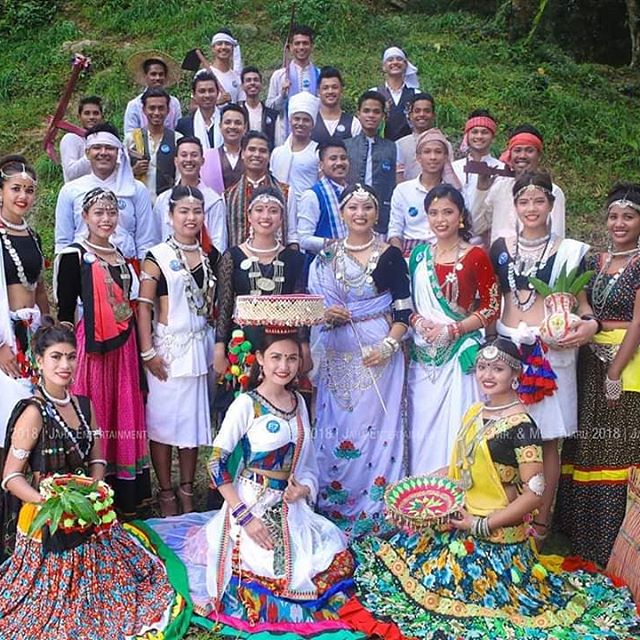

The Tharu people are an ethnic group indigenous to the southern foothills of the Himalayas; most of the Tharu people live in the Nepal Terai.[3][4][5][6] The word ???? th?ru[7] is thought to be derived from sthavir meaning follower of Theravada Buddhism.[8] Some Tharu groups also live in the Indian Terai, foremost in Uttarakhand, Uttar Pradesh and Bihar.[9]